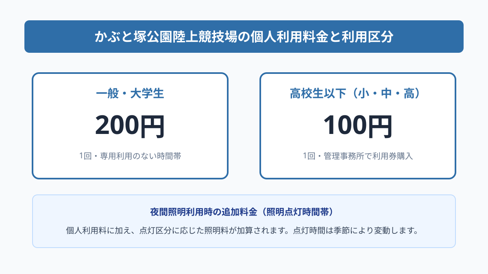
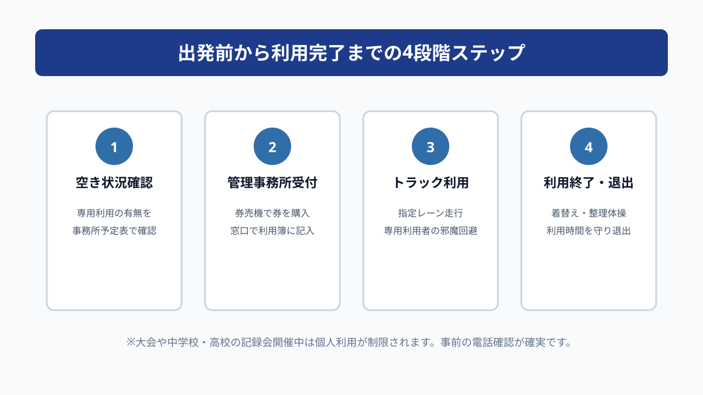

スポーツ・イベント
かぶと塚公園陸上競技場｜個人利用の時間と料金
この記事の要点
Q. かぶと塚公園の陸上競技場は、個人で一般利用できる？
A. 専用利用（貸切）がない時間帯に限り、一般・大学生1回200円、高校生以下100円で個人利用が可能です。管理事務所の券売機で利用券を購入して入場します。夜間照明料や専用利用予定の確認手順を整理します。
導入——市民が本格的な400mトラックを個人で走れる拠点
静岡県磐田市見付にある「かぶと塚公園陸上競技場」は、全天候型ウレタン舗装の本格的な400mトラックを備えた公営のスポーツ施設です。市内外の陸上競技大会や学校行事、実業団の練習拠点として広く親しまれていますが、実は一般の市民ランナーや学生も「個人利用」として1回単位で気軽に走ることができます。
普段のランニングを一般道路で行っていると、信号待ちによる足止めや歩道の段差、暗い夜道での車や自転車との接触など、安全面や練習の質において様々な制約に直面します。正確なペース配分を身につけたい市民ランナーや、怪我を防ぐために足腰への衝撃が少ない路面を求める方にとって、公認仕様のトラックは理想的な環境です。
しかし、市民の間では「本格的な競技場だから部活動の選手や陸上クラブ専用ではないか」「一般人が勝手に入って走って良いのか分からない」といった心理的なハードルを感じている方が少なくありません。また、利用料金や受付の手順、夜間の照明利用の方法などが分かりにくいという声も耳にします。
最初にお答えすると、かぶと塚公園陸上競技場は、専用利用（大会や団体の貸切予約）が入っていない日時に限り、一般・大学生は1回200円、高校生以下（小・中・高生）は1回100円という手頃な料金で誰でも個人利用が可能です。管理事務所の券売機で利用券を購入し、受付簿に記入するだけで入場できます。
この記事では、磐田市公式ウェブサイトの公表資料と現地管理事務所の案内を手がかりに、利用時間や料金体系の詳細、夜間照明の仕組み、専用利用の確認手順、トラック上での走行マナーまでを実務家の生活目線で整理します。週末のトレーニングを計画する前の確認材料としてお役立てください。

まず、公式資料から事実を整理する
磐田市が公表している「かぶと塚公園陸上競技場」の施設案内および「公園施設ガイド」の資料によると、施設の開館時間は午前8時30分から午後9時（21時）までと定められています。休館日は毎週月曜日（月曜日が祝日の場合はその翌日）および年末年始（12月29日から1月3日）です。
個人利用の料金区分は明確に規定されており、一般および大学生は1回200円、高校生以下の児童・生徒・幼児は1回100円となっています。未就学児は無料ですが、安全確保のため保護者の同伴が必須条件とされています。利用料は管理事務所内に設置された自動券売機で現金等により利用券を購入して支払います。
競技場の設備スペックを確認すると、日本陸連公認に準拠した全天候型ウレタン舗装の400mトラック（直走路8レーン・曲走路6レーン）が整備されており、走路の弾力性と水はけの良さが確保されています。インフィールドには天然芝フィールドが広がりますが、芝生部分は原則として投てき競技や専用利用の対象であり、個人のトラック走行者は走路のみを利用します。
夜間利用のための設備として、競技場を取り囲むように4基の大型夜間照明塔が配置されています。日没以降の薄暗い時間帯でも、昼間と変わらない明るさの中で安全に疾走できる環境が整っています。照明の点灯は季節や天候によって開始時刻が異なり、照明料金は個人利用料とは別建てで加算される運用ルールになっています。
さらに付帯施設として、メインスタンド下には男女別の更衣室、シャワー室、コインロッカー、トイレが完備されています。仕事帰りや外出先からそのまま立ち寄って運動ウェアに着替え、運動後に汗を流して帰宅できる動線が確保されている点も、公営競技場ならではの充実した設備と言えます。
磐田の暮らしに置き換える
公式資料に示されたスペックを、磐田市民の日常的な暮らしの動線に引き直して考えてみましょう。かぶと塚公園は磐田市見付地区の緑豊かな丘陵地に位置し、JR磐田駅から車で約8分、国道1号バイパスの見付ICや磐田ICからも至近距離にあります。市内のどの地区からもアクセスしやすい好立地です。
近隣にお住まいの方や市内で働く市民にとって、夜9時まで開館している全天候型トラックの存在は、仕事帰りの運動習慣を支える強力な味方になります。暗くなった夜間に街灯の少ない農道や住宅街を走るリスクを避け、明るく安全に管理された競技場で練習できるメリットは非常に大きいです。
また、週末の市民マラソンや市民駅伝を目指すシリアスランナーにとって、400mトラックでの正確な距離測定は不可欠です。GPSウォッチの計測誤差に惑わされることなく、100mごと・400mごとのラップタイムを正確に刻むインターバルトレーニングやペース走を、200円という低コストでこなすことができます。
中学生や高校生の部活動生にとっても、土日に対外試合や遠征がない日、自主練習の場としてトラックを利用できる価値は絶大です。学校のグラウンドが土の場合、雨上がりにはぬかるんで走れませんが、かぶと塚のウレタン舗装トラックであれば雨天直後でも水たまりが引けばすぐに練習を再開できます。
駐車場に関しても、かぶと塚公園には総合体育館や弓道場、野球場と共用の大規模な無料駐車場が用意されています。数百台規模の駐車スペースがあり、平日の夕方や一般的な週末の午前中であれば、競技場入口に近い第1・第2駐車場へ余裕を持って駐車できます。車移動が前提の磐田市民にとって、駐車料金がかからない点も嬉しい要素です。

評価——良い点と、注文したい点
かぶと塚公園陸上競技場の個人利用について、市民ランナーや生活者の視座から客観的に評価してみましょう。まずは良い点です。
良い点は、何よりも「1回200円」という圧倒的な費用の安さと、利用手続きの気軽さです。民間フィットネスクラブの月会費や都度利用料と比較しても桁違いに手頃であり、入会金や会員登録の手間なしに、券売機でチケットを買うだけでその日から最高水準のトラックを走ることができます。
また、足腰への負担を軽減するウレタン舗装のクオリティも特筆すべき良い点です。硬いアスファルトの上を走り続けると膝や足首を痛めやすい中高年ランナーにとって、適度な反発と衝撃吸収性を持つトラック路面は、怪我を予防しながら運動強度を高める上で最適な環境を提供してくれます。
一方で、利用者の立場から見た注文したい点もいくつか存在します。
注文したい点は、当日の「個人利用の可否」に関する情報発信の即時性です。かぶと塚公園陸上競技場では、市内中学校の陸上記録会や各種スポーツ協会の大会など、土日を中心に専用利用（貸切）が入ることが頻繁にあります。専用利用中は一般の個人利用が全面的に締め出されるため、現地まで行って初めて「今日は大会で使えない」と知る市民が後を絶ちません。
また、夜間照明料金の運用ルールが初見の市民には少し分かりにくい点も改善の余地があります。照明料は点灯区分（全点灯・トラック点灯など）によって金額が異なり、複数の個人利用者がいる場合の費用負担やコインの購入方法について、管理事務所の窓口で丁寧に確認しないと戸惑ってしまうことがあります。
対案・結論——三段階で確認する
これらの良い点と注意点を踏まえた上で、市民が無駄足を踏まずに快適にトラックを活用するための対案・結論として、「三段階の事前確認」を強く推奨します。
第一段階は、「専用利用の有無を事前に確かめる」ことです。最も確実な方法は、出発前にかぶと塚公園管理事務所（電話：0538-33-3443）へ直接電話をかけ、「本日の○時から個人利用でトラックを走れますか」と確認することです。磐田市公共施設予約システムの空き状況画面でも確認できますが、当日の直前予約や時間変更もあるため電話確認が最も確実です。
第二段階は、「持ち物と靴底の規定を点検する」ことです。個人利用料（小銭200円または100円）の準備はもちろん、シューズの選定が重要です。トラックを傷める泥付きの靴は禁止されているため、靴底をきれいに清掃したランニングシューズを用意します。スパイクを使用する場合は、全天候型専用の平行ピン（規定ミリ数以下）が装着されているかを再確認してください。
第三段階は、「万一の代替コースを頭に入れておく」ことです。現地に到着した後に急遽専用利用が延長されたり、荒天で利用中止になったりした場合に備え、かぶと塚公園の外周を巡るウッドチップ舗装のジョギングコース（1周約1,000m）を走るプランBをあらかじめ決めておきます。これによって、無駄足にならずに運動習慣を維持できます。
このように、事前の電話確認、適切な装備の準備、そして代替プランの確保という三段構えを整えておくことで、思い立ったときにいつでも質の高いトレーニングを完遂することが可能になります。
確認する順番
実際にかぶと塚公園陸上競技場へ個人利用に出かける当日は、以下の手順に沿って行動すると極めてスムーズに入場から利用終了まで運ぶことができます。
- 空き状況の事前確認：出発前にかぶと塚公園管理事務所（0538-33-3443）へ電話し、当日の個人利用可否と時間帯を確認する。
- 持ち物とシューズの点検：利用料（200円または100円）、泥を落としたランニングシューズ、タオル、水分補給ボトルを準備する。
- 管理事務所で受付：入口の自動券売機で個人利用券を購入し、窓口の利用者名簿に氏名と入退場時間を記入する。
- トラックでの練習：走力に応じた指定レーン（低速・ジョギングは外側7・8レーン）を走行し、周囲の安全に配慮する。
- 利用終了と退出：着替えや整理体操を済ませ、利用終了予定時刻までにスタンド更衣室から退出する。
管理事務所の窓口スタッフは親切に対応してくれますので、個人利用が初めてである旨を伝えれば、券売機の操作方法や更衣室の場所、現在のトラック利用状況を詳しく案内してくれます。遠慮せずに声をかけてみてください。
家族や仲間で共有するための記録
陸上競技場の個人利用は、個人の練習だけでなく、家族での運動やランニング仲間との合同練習にも適しています。ただし、公共のスポーツ施設だからこそ、共有すべき安全上のルールとマナーがあります。
第一に、トラックのレーン使い分けの原則です。陸上界の共通マナーとして、最内側の第1レーンおよび第2レーンは、速いスピードでタイムトライアルやインターバル走を行う走者に優先的に譲るのが通例です。ゆったりとジョギングやウォーキングを行う方、ウォーミングアップやクールダウンを行う方は、第7レーンや第8レーンなどの外側レーンを使用します。
第二に、小中学生のお子様連れで利用する場合の安全管理です。競技場内では短距離走の選手がトップスピードで走り抜けるため、トラックを不用意に横断したり、逆走したりすると重大な衝突事故につながります。走路を横断する際は必ず左右の走者を確認し、小さなお子様からは絶対に目を離さないよう配慮してください。
第三に、イヤホンや音楽プレーヤーの使用マナーです。後方から高速で接近する他の走者の足音や「抜きます」「右通ります」といった声かけが聞こえない状態での走行は大変危険です。トラック内ではイヤホンを外すか、周囲の音が完全に聞こえる骨伝導タイプや片耳装着に留めることが推奨されます。
大石の視点
静岡県磐田市で不動産業を営み、日頃から土地建物の調査や地域住民の皆様の暮らしの相談を受ける立場から見ると、かぶと塚公園陸上競技場のような本格的なスポーツ施設が市街地至近に存在することは、磐田市の住環境の大きな魅力の一つだと実感します。
住まい探しや移住の相談を受ける際、通勤の利便性や学区と並んで「休日に子どもと一緒に思い切り体を動かせる場所があるか」「健康維持のために安全に運動できる環境が整っているか」を重視されるお客様が年々増えています。かぶと塚公園は、陸上競技場だけでなく、豊かな木々に囲まれた芝生広場や総合体育館、近隣の史跡（兜塚古墳など）が一体となった複合的な地域拠点です。
日々の仕事や家事で忙しい現代人にとって、高額な会費を払わずに1回200円で最高峰のトラックを使える公共インフラは、生活の質を高める貴重な社会資源です。公営施設を「ただ存在する箱」として眺めるのではなく、自分自身の健康づくりや家族の思い出づくりのために能動的に使いこなしていくことこそ、地域で豊かに暮らす秘訣と言えます。
見付地区の静かな住環境の中で、風を切ってトラックを走る爽快感は格別です。まだ一度も足を踏み入れたことがない市民の方も、ぜひ気軽にかぶと塚公園の管理事務所を訪ねて、トラックの感触を足裏で確かめていただきたいと思います。
まとめ
かぶと塚公園陸上競技場は、一般市民に広く開かれた磐田市の誇るスポーツ拠点です。専用利用のない時間帯であれば、一般200円・高校生以下100円という手頃な料金で、全天候型400mトラックの恩恵を誰でも享受できます。
無駄足を防ぐための出発前の電話確認（0538-33-3443）、靴底の点検、トラック内でのレーン使い分けのマナーを守ることで、安心・快適に本格的なランニングを楽しむことができます。
週末の運動不足解消から市民マラソンへ向けた本格的な記録への挑戦まで、身近な公共施設を日々の生活に上手に組み込んで、健康的で充実した磐田ライフをお送りください。
- かぶと塚公園陸上競技場の個人利用は一般・大学生200円、高校生以下100円で誰でも利用可能。
- 専用利用（貸切大会等）の有無を事前に出発前電話（0538-33-3443）で確認することが不可欠。
- 夜間21時まで照明付きで走行可能、更衣室・シャワー・無料駐車場完備で仕事帰りにも最適。
参考にした公式情報
- かぶと塚公園陸上競技場／磐田市（2026年9月12日確認）
- 公園施設ガイド かぶと塚公園／磐田市（2026年9月12日確認）
最終確認日：2026-09-12 ／ 本記事は公表情報と執筆者の見解を分けて記載しています。制度・数値・公開状況は変更される場合があるため、最新情報は磐田市公式ページでご確認ください。